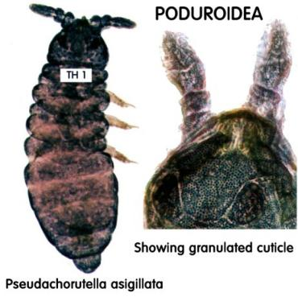

|
|
|
Identification The first step is to learn to recognise the FOUR different groups of springtails. The first two groups are superfamilies, the Poduroidea and Entomobryoidea, which together form the order Arthropleona. Both groups have elongate bodies with segments distinct and unfused at least as far back as abdominal three. Poduroidea have relatively short antennae, a finely granular cuticle and an obvious prothorax (1st thoracic segment) dorsally with at least a few setae (bristles). The entomobryoidea have longer antennae, a smooth cuticle with setae and sometimes scales (superficially similar to butterfly scales) as well and a reduced prothorax dorsally without setae, and often completely hidden from above by the segment behind. Poduroids are mainly soil dwellers; they move slowly and are weak jumpers. Entomobryoids, however, live mainly in surface litter and emergent vegetation; they are fast movers and good jumpers. Check the illustrations below for some of these characters. These two superfamilies form the order Arthropleona. |
|  |
|
Click here to continue this topic. |
|
• Welcome • The PMS • The Study Group • What are Springtails? • Collecting Techniques • Observation Techniques • Cultures • Identification • Springtails of the Month • Photo Gallery • Correspondence •Related Sites • E-mail • PMS Main Site • |